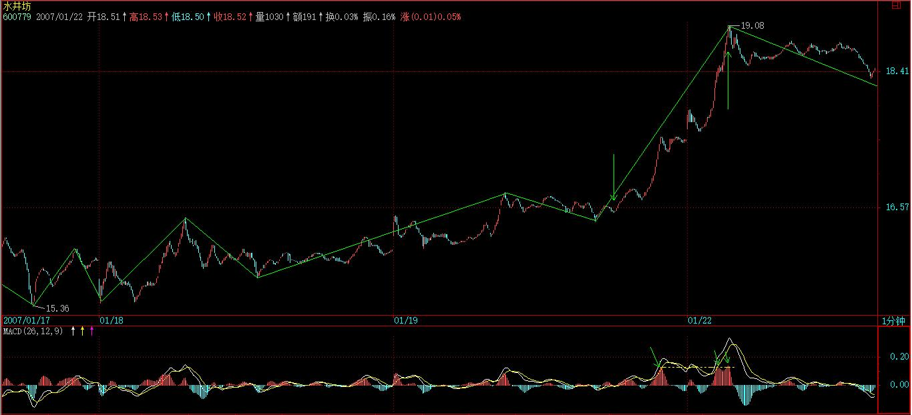
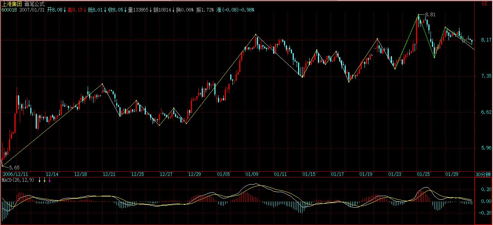
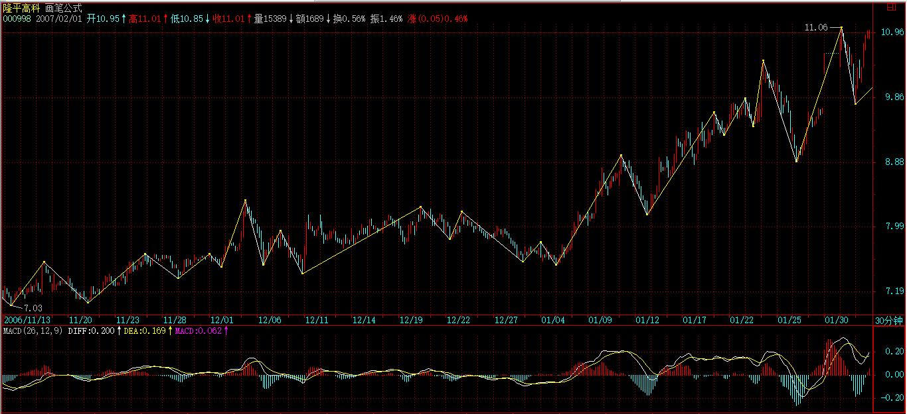
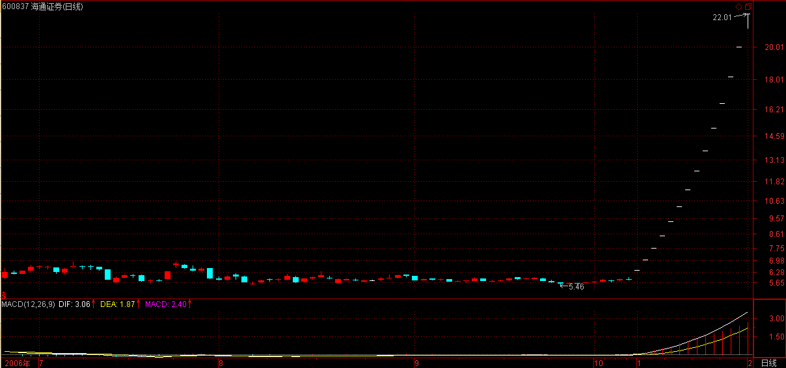

(2007-01-30 15:09:57)
在对中枢进行更深入的分析之前，先写这一章。
注意，这不是粗略地谈论市场风险的回避问题，而是对这个问题进行一个根本性的分析。
首先要搞清楚的，什么是市场的风险。
有关风险，前面可以带上不同的定性，政策风险、系统风险、交易风险、流通风险、经营风险等等，但站在纯技术的角度，一切风险都必然体现在价格的走势上，所有的风险，归根结底，最终都反映为价格波动的风险。
例如，某些股票市赢率很高，但其股价就是涨个不停，站在纯技术的角度，只能在技术上衡量其风险，而不用考虑市赢率之类的东西。
本ID理论成立的一个最重要前提，就是被理论所分析的交易品种必须是在可预见的时间内能继续交易的。
例如，一个按日线级别操作的股票，如果一周后就停止交易，那就没意义了，因为这连最基本的前提都没有了。当然，如果你是按1分钟级别去交易，那一周后停止交易的股票即使有风险，也是技术上可以控制的。
唯一不能控制的就是，不知道交易什么时候被突然停止，这种事情是技术上的最大死穴，因此本ID的理论也不是万能的，唯一不能的地方，就是突然会被停止交易，理论成立的前提没有了。
当然，有一种更绝的就是交易不算了，这和停止交易是一个效果，这绝对不是天方夜谈，在不成熟的市场里一点都不奇怪，例如那著名的327事件，本ID肯定是那次事件的最大冤家。【韶山映山红】327是国债代号，并不是案发当日，出事的那天是1995.02.23。327国债期货深刻改变了中国证券市场的进程。】
【韶山映山红】八卦：在327事件中，一个叫陈万宁的交易员亏损七千万，黯然离场。几年后他以宁财神为笔名，写出了家喻户晓的《武林外传》。】
本ID当天在高位把一直持有多天的多仓平了，因为按技术肯定要回调，在最后万国发疯打跌停时，本ID又全仓杀进去开多仓，价位147.5元，结果第二天竟然不算，【韶山映山红】当晚11点，中央电视台向全国发出公告：下午4点22分13秒后的成交无效，此前最后一笔交易的151.30元为当日收盘价。】
幸亏本ID反应快，在别的品种封停前抢进去了，后来都集中到319上，一直持有到190附近平仓，【韶山映山红】319也是国债代号，并不是案发当日，出事的那天是1995.05.11。】然后马上转到股票上，刚买完，第二天就公布停国债期货，【韶山映山红】1995.05.17中国证监会通知暂停国债期货交易。】股市从500多点三天到900多点。【韶山映山红】1995.05.18-1995.05.22三天股市暴涨。】所以本ID对国债期货是很有感情的，最主要是一次被不算了，幸亏当时守纪律，不贪小便宜开空仓，否则就麻烦大了。【韶山映山红】空方代表：万国证券总裁管金生，辽宁国发集团高原、高岭兄弟。】还有就是最后一天走掉，免去了最后的所有麻烦，还赶了一个股票的底。
当时所谓的大户室里，都是有人专门报单的，直接打给场内的红马甲，行情不忙的时候还可以和红马甲聊天，确实人性化，不像现在都基本是电脑对电脑，一点意思都没有。
本ID是刚上大学就开始炒股票，天天往证券部去，年龄不大，股龄可长了去了，可怜大学基本没上过一堂课，除了考试，基本就没见过老师，各位千万别学。
说了那么多，只是想说明一个道理，像交易不算，突然停止交易等，并不是本ID的理论可以控制的，像本ID最后一天在319平仓，决不是看图来的，只是327不算的经历，使得本ID受到严重教训，对当时那些管理层的严重弱智以及毫无信用采取坚决不信任的态度，先出来免得又来一次不算而已。但只要交易延续、交易是算的，那么本ID的理论就没有任何盲点需要特别留意了。【韶山映山红】327是一个国债产品的代号。1995年2月23日的疯狂博弈之后，上交所在经过紧急会议宣布：1995年2月23日16时22分13秒之后的所有交易是异常的，当日收盘前8分钟内空头的所有卖单无效。利益相关，至今当事各方都是一地鸡毛。虽然侥幸没有在事件中受损，但交易无效这件事让缠师“受到严重教训”，以至于后面在博客里无数次地提及327事件。】
所以，在应用本ID的理论时，唯一需要提防的风险就是交易能否延续以及是否算数。对那些要停止交易的品种，最好别用什么理论了，直接去赌场算了。
至于停牌之类的，不影响理论对风险的控制。
其他的一切风险，必然会反映在走势上，而只要走势是延续的，不会突然被停止而永远没有了，那一切的风险都在本ID的理论控制之中，这是一个最关键的结论，应用本ID的理论，是首先要明确的。
但更重要的是，停止交易不是因为市场的原因，而是因为自身。任何的交易都必须有钱，也就是交易的前提是先有钱，一旦钱是有限期的，那么等于自动设置了一个停止交易的时限，这样的交易，是所有失败交易中最常见的一种，以前很多人死在透支上，其实就是这种情况。
任何交易的钱，最好是无限期的，如果真有什么限期，也是足够长的，这是投资中极为关键的一点。
一个有限期的钱，唯一可能就是把操作的级别降到足够低，这样才能把这个限期的风险尽量控制，但这只是一个没有办法的办法，最好别出现。
有人可能要问，如果业绩突然不好或有什么坏消息怎么办？其实这种问题没什么意义，即使在成熟市场里，这类的影响都会事先反应在走势上，更不用说在中国社会里，什么消息可以没有任何人事先知道？你不知道不等于别人不知道，你没反应不等于别人没反应，而这一切，无论你知道与否，都必然会反应到走势上，等消息明朗，一切都晚了。
走势是怎么出来的？是用钱堆出来的！
在这资本的社会里，又有什么比用实在的钱堆出来的更可信？除了走势，又有什么是更值得相信的？而那些更值得相信的东西，又有哪样不是建筑在金钱之上的？
资本市场就是一个金钱的游戏，除了钱，还是钱。只有钱是唯一值得信任的，而钱在市场上运动的轨迹，就是走势。这是市场中唯一可以观察与值得观察的东西。
一切基本面、消息面等的分析，最终都要落实到走势上，要让实在的钱来说话，否则都是自渎而已。只要有钱的运动，就必然留下轨迹，必然在走势上反映出来。
市场中，唯一的活动，其实就是钱与股票的交换运动。
股票就是废纸一张，什么基本面分析，这价值那价值的归根结底都是胡诌，股票就是废纸，唯一的功能就是一张能让你把一笔钱经过若干时间后合法地换成另一笔钱的凭证。【韶山映山红】静姐：股票本身没有价值，也不是股票让你赚钱，真正让你赚钱的是技术。】
交易的本质就是投入一笔钱，在若干时间后换成另一笔钱出来，其中的凭证就是交易的品种。本质上，任何东西都可以是交易品种，所谓股票的价值，不过是引诱你把钱投进来的诱饵。
应用本ID理论的人，绝对要首先认清楚这一点。对于你投入的钱来说，那些能让你在下一时刻变成更多的钱出来的凭证就是有价值的。如果有一个机器，只要你投1块钱，1秒钟后就有1万亿块钱出来，那傻瓜才炒股票。可惜没有这机器，所以只能在资本市场上玩。
而市场上，对任何的股票都不值得产生感情，没有任何股票可以给你带来收益，能给你带来收益的是你的智慧和能力，那中把钱在另一个时间变成更多钱的智慧和能力。
股票永远是孙子，被股票所转的，就连孙子都不如了。
同理，市场的唯一风险就是你投入的钱在后面的时刻不能用相应的凭证换成更多的钱，除此之外，一切的风险都是狗屁风险。
但任何的凭证，本质上都是废纸，以0以上的任何价格进行的任何交易都必然包含风险，也就是说，都可能导致投入的钱在后面的某一时刻不能换回更多的钱，所以，交易的风险永远存在。
那么，有什么样的可能，使得交易是毫无风险的？唯一的可能，就是你拥有一个负价格的凭证。
什么是真正的高手、永远不败的高手？就是有本事在相应的时期内把任何的凭证变成负价格的人。对于真正的高手来说，交易什么其实根本不重要，只要市场有波动，就可以把任何的凭证在足够长的时间内变成负价格。
本ID的理论，本质上只探讨一个问题，如何把任何价格的凭证，最终都把其价格在足够长的时间内变成负数。
任何的市场波动，都可以为这种让凭证最终变成负数的活动提供正面的支持，无论是先买后卖与先卖后买，效果是一样的，但很多人就只会单边运动，不会来回动，这都是坏习惯。市场的无论涨还是跌，对于你来说永远是机会，你永远可以在买卖之中，只要有卖点，就要卖出，只要有买点就要买入，唯一需要控制的，就是量。
即使对于本ID这样的资金量来说，1分钟的卖点本ID也会参与，只是可能就只卖5万股，跌回来1分钟买点买回来，差价就只有1毛钱，整个操作就除了手续费可能只有4000元的收入，但4000元不是钱？够一般家庭一个月的开销了。而更重要的是，这样的操作能让本ID的总体成本降低即使是0.000000001分，本ID也必须这样弄。
所以，对于本ID来说，任何的卖点都是卖点，任何的买点都是买点，本ID唯一需要控制的只是买卖的量而已。【韶山映山红】不同级别的买卖点对应不同的操作仓位。】
级别的意义，其实只有一个，基本只和买卖量有关，日线级别的买卖量当然比1分钟级别的要多多了，本ID可以用更大的量去参与买卖，例如100万股，1000万股，甚至更多。
对于任何成本为正的股票，本ID永远不信任，只有一个想法就是要尽快搞成负数的。对权证也不例外，例如已经停掉的某认购权证，本ID最终在最后几天上涨到1块多完全出掉时，当时的成本是负的2块8毛多，
注意，本ID的仓位是一直不变的，最开始多少就是多少，上上下下，卖点的时候变少，买点的时候又回复原来的数量，但绝对不加仓，一开始就买够。
因此，站在这个角度，股票是无须选择的，唯一值得选择的，就是波动大的股票，而这个是不能完全预测的，就像面首的行与不行，谁知道下一次怎么样？
对于本ID来说，市场从来没有任何的风险，除非市场永远一条直线。
当然，对于资金量小的投资者，完全可以全仓进出，游走在不同的凭证之间。这样的效率当然是最高的，不过这不适用于大资金。大资金不可能随时买到足够的量，一般来说，本ID只在月线、最低是周线的买点位置进去，追高是不可能的，这样会让变负数的过程变得太长，而且都是在庄家吸得差不多时进去，一般都是二类或三类买点，这样可以骗庄家打压给点货，从散户手里买东西太累，一般不在月线的第一类买点进去，这样容易自己变庄家了。对于庄家来说，本ID是最可怕的敌人，本ID就像一个吸血的机器，无论庄家是向上向下都只能为本ID制造把成本摊成负数的机会，他无论干什么都没用，庄家这种活，本ID早不干了，本ID只当庄家的祖宗，庄家，无论是谁，只要本ID看上了，就要给本ID进贡。
一笔足够长的钱 + 加上本ID理论的熟练运用 = 战无不胜。
市场，哪里有什么风险？
各位注意了
如果到今天才继续追高买股票，那神仙都没法救你。大盘今早一个明显的5分钟背驰，从而引发调整，是最正常不过的。【韶山映山红】线段类盘整背驰。】
但个股问题不大，本ID的农业、军工不是很好吗？
【韶山映山红】000998隆平高科。】
【韶山映山红】600343航天动力。】
不送礼和浙江人不是继续创新高吗？
【韶山映山红】000416健特生物，生产脑白金。2008-01-06变更为华馨实业，2008-12-30变更为民生投资，2014-04-14变更为民生控股。】
【韶山映山红】000777中核科技】
本ID最近换的那五个板块，都不是瞎换的，农业、环保、军工都是中国以后最重要的、对国家安全最有意义的领域，后面的政策支持多了去了，想想为什么中央的1号文说的就是农业？
【韶山映山红】2007-01-01中国政府网《中共中央国务院关于积极发展现代农业扎实推进社会主义新农村建设的若干意见》（中发〔2007〕1号）。 一、加大对“三农”的投入力度，建立促进现代农业建设的投入保障机制； 二、加快农业基础建设，提高现代农业的设施装备水平； 三、推进农业科技创新，强化建设现代农业的科技支撑； 四、开发农业多种功能，健全发展现代农业的产业体系； 五、健全农村市场体系，发展适应现代农业要求的物流产业； 六、培养新型农民，造就建设现代农业的人才队伍； 七、深化农村综合改革，创新推动现代农业发展的体制机制； 八、加强党对农村工作的领导，确保现代农业建设取得实效。】
当然，这些事情本ID是早知道了，北京什么多？什么最准确？那美国鬼子即使在基本面上也没法和本ID比。【韶山映山红】消息面？基本面？★可以做个专题，以后研究。】
那药最高位置告诉要洗盘调整，如果这都不能逃过，那本ID没法子了，有就拿着吧，反正洗完还要继续的。以后本ID也不提醒了，高位提醒都不照着干，跌了才问怎么办，本ID怎么知道怎么办？只能说这种短差你无福消受，继续好好练技术吧。
【韶山映山红】000999三九医药，2010.02.24变更为华润三九。】

大盘的震荡依然继续，因此一定要看好卖点，该走就走，该买回来就买回来，灵活点。当然，技术不过关的就上上下下享受一下，技术过关再说了。
2007-1-30 15:25
、
[匿名] 过客 2007-01-30 15:19:09
今天的药有点受潮啊，缠姐
===
那就对了，前两天提醒了都不走，今天还问什么？现在是走了的找机会买回来，而不是问这类无聊的问题。这个毛病改不过来，很难提高。
2007-1-30 15:27
[匿名] 淡定 2007-01-30 15:26:05
楼主辛苦！000001坚定持有，早上出了小部分600050，感觉短期是否该回避风险了？
【韶山映山红】000001深发展A，2012-08-02变更为平安银行。】
【韶山映山红】600050中国联通。】
==
看技术买点，一定要综合地看，如果30分钟很强的，甚至1分钟的买点也该回补了，但如果30分钟很弱，那至少要等30分钟的买点出现。【韶山映山红】深发展A偏强，中国联通震荡延伸中，偏弱。】
2007-1-30 15:29
[匿名] 雨中荷 2007-01-30 15:19:08
楼主好！我今天在11.30元左右全仓买入000999，尾市跌停，楼主我该如何操作，是先出局还是先观望？谢谢你！
【韶山映山红】000999三九医药，2010.02.24变更为华润三九。】
==
首先你为什么那里买？
1分钟背驰就买？一个一月涨了1倍的股票1分钟背驰就买？
先套着吧，好好反省。看来本ID前几天的提醒白说了。中线该股是肯定没问题的，短线受点折磨也应该，否则永远没进步。
以后本ID都不会再提醒洗盘了，反正说了也白说，而且还害了大家有依赖。
2007-1-30 15:34
[匿名] 天生迷糊 2007-01-30 15:31:56
你好，数学女孩。今天好多人都不敢买卖了，大盘忽悠起来了，能给个明灯吗？谢谢，我正在学习你的课程，感谢！
===
先把本ID说过的理论搞清楚，今天的大盘走得太标准了，一点意外都没有。
看看5分钟的图。
2007-1-30 15:36
[匿名] 锅贴
2007-01-30 15:41:46
lz请教您个问题,您看600090能走出中线行情吗? 【韶山映山红】600090同济堂。
==
现在不就在中线行情之中？
【韶山映山红】当时正是日线盘整后离开中枢，开始回踩。】
2007-1-30 15:45
[匿名] 学习 2007-01-30 15:43:11
5分钟背弛看到了，和上一次相比没什么新意。唯一的区别是上次比较明显的看出5分钟的回拉是一个走势类型，而这次回拉，我没有看出中枢。
==
看出是第一步，第二步而且最重要的是操作，这里又不培养股评，知道有什么用，关键是操作。
操作就有一个量的问题，而且还有个股与大盘不同的问题，这都要在实践中不断提高的。
2007-1-30 15:47
匿名] 雨中荷 2007-01-30 15:19:08
楼主好！我今天在11.30元左右全仓买入000999，尾市跌停，楼主我该如何操作，是先出局还是先观望？谢谢你！
===========
缠中说禅
首先你为什么那里买？1分钟背驰就买？一个一月涨了1倍的股票1分钟背驰就买？先套着吧，好好反省。看来本ID前几天的提醒白说了。中线该股是肯定没问题的，短线受点折磨也应该，否则永远没进步。
以后本ID都不会再提醒洗盘了，反正说了也白说，而且还害了大家有依赖。
----------
[匿名] 雨中荷 2007-01-30 15:51:54
抱歉楼主，我是看了下面的报道，然后看到1分钟出现买点以为楼主洗盘结束了！！！
本报见习记者 吴丽娟 实习记者 李保华 深圳报道
三九重组谜团即将在本月底揭晓，如无意外，华润将成为入主三九的最终胜出者。这意味着历时近三年的三九重组终于尘埃落定。
======
记者都知道实际情况，那庄家怎么玩？什么叫如无意外？【韶山映山红】000999三九医药，2010.02.24变更为华润三九。】
现在关键是价格问题，华润现在的价格想买？作梦去吧！【韶山映山红】这句话怎么理解？★那个时候还没有通过二级市场收购的案例。以后研究。】
2007-1-30 15:55
[匿名] 糊涂 2007-01-30 15:56:28
缠姐 你好 你说的行业里没有煤炭,不知道后期如何?大同煤业今天30分钟新高,但macd很短是否背弛? 【韶山映山红】601001大同煤业。】
==
能源可以，没问题的，本ID不可能把所有板块都买了，并不是说本ID不买的就不好。
2007-1-30 15:57
大家注意了
在谈判中，没到最后一刻都不知道最后的买家与价格，这是多方较力的结果，这种事情，怎么可能让记者知道？关键是要去想想，为什么这么多人都想收购他？收购价是多少？这是否能支持其股价以及继续向上。当然，这些最终都反应在走势中，看着就知道了。本ID这里当然有很准确的消息，但说出来也没什么意义，反而让大家有个坏习惯。
2007-1-30 16:03
各位，现在就不要具体问个股如何操作的问题了，就是按图形来操作，把级别定好，但千万别太机械了，要配合好大级别的，否则都按1分钟来，就机械了。
首先要判断好大级别的走势，例如日线在上涨中，那1分钟之类的就算走了，一定要及时买回来，而且最好别按1分钟弄，5分钟甚至更长都可以，除非是最后的急促拉抬，那就要配合好1分钟的图形。600779就是一个好例子，好好研究。【韶山映山红】怎么知道是“最后的急促拉抬”呢？★★★以后研究。】
【韶山映山红】600779水井坊。是“急促拉抬”的“配合好1分钟的图形”的例子。】

【韶山映山红】1分钟笔线段初始化的递归。画了几个月的1分钟线段递归。不管划分的细节对不对，应该可以确定，是5分钟上涨趋势。】
【韶山映山红】如果没有能力判断这种转折，那么，一分钟线段盘整急涨之后，1分钟向下回到最后一个5分钟中枢，就应该有所反应了。★以后研究。】
【韶山映山红】感觉这个案例应该是哪一级都没有明确的背驰，甚至第一个向下线段都没有跌破前高，硬生生的小转大，慢慢走成的下跌。★以后研究。】
【韶山映山红】用5分钟做最低级别划分笔、线段的初始化，线段中枢级别的三中枢上涨趋势。对比1分钟最低级别的划分看看。】
2007-1-30 16:14
wy1499 2007-01-30 16:09:40
雨中荷，没事儿，我也在11.20以上进了点货，药在5分钟上也背弛了，做个短差足够了，现在工行这种价位，要大跌也得先涨一段，就拿这药练习一下短线技术，我做短差也都是拿接近6位数的资金做的，不这么搞，胆子练不出来，想在股市上赚钱，先要做到不能把钱当钱，筹码而已。
楼主以为如何！
==
应该是首先不把股票当股票，凭证而已。
但短线比较适合在日线等大级别出现震荡时，【韶山映山红】提问者打短差的资金接近6位数，也就是接近10万元，缠师认为这个资金的短差适合在日线级别的震荡做。】如果是日线的上涨中，太多短线是不适合的，特别技术不过关，就会买不回来给夹空了，【韶山映山红】一天的调整甚至日内的调整不适合太多短线。】而在日线的下跌中，就会被严整套住了。【韶山映山红】小级别反弹更不好操作。比夹空更糟糕。】所以先要判断好日线等大级别的走势，然后再说短线。【韶山映山红】日线级别的震荡，也就是日线级别的盘整，或日线级别趋势的中枢。关注30分钟走势形成的第三类买卖点。之前的都属于震荡。】
注意，卖错了无所谓，千万别买错了，宁愿买不到，不要卖不出。
不过，有时候被套其实无所谓的，特别中线依然看好时，适当的短线，可以把成本降下来，等于又买到正确的位置上了。不过这都需要磨练，不断总结。
高手，就是该短线能短线，该长线能长线，能控制住量，量其实是最关键，出多少，买多少，这比买点和卖点更重要。不过这对小资金意义不大。【韶山映山红】小资金可以全仓进出，所以最关键的不是量，而是正确的判断。】
2007-1-30 16:22
[匿名] 老虎今晚吃草 2007-01-30 16:21:59
把凭证变成负的,就是不断的做波段，利用庄家冼盘摊低自已的成本，振华科技我就是这样操作的，２毛钱之间来回，但是向蝉美眉请教一下，现在０００７３３是明显的女上位，没有吻，它会有高潮吗？它的后市如何呢？难道要等第一吻吗？
【韶山映山红】000733振华科技。】
===
还要继续学习，用中枢的概念去分析，你会更清楚。【韶山映山红】以5分钟为最低级别做笔、线段初始化的粗略分析。线段中枢的上涨趋势+线段中枢的向下盘整+线段中枢的上涨趋势，最近一个趋势的第二个中枢正在形成中。】
2007-1-30 16:23
[匿名] 善存 2007-01-30 16:16:39
有幸买了镍,昨天在某级别卖点出了,今天在1分钟买点进了,投入资金小,权当练练手了,亏了也无所谓.
==
有时候不一定要专门在一只股票上的，可以适当换着来，例如一个30分钟的买点，怎么都比1分钟的有吸引力，对于小资金，这点更重要。【韶山映山红】首先要有一个自己的股票池，然后轮动着炒，用相对大一点点级别的买点切入。】
2007-1-30 16:25
[匿名] 方法方法方法 2007-01-30 16:23:44
缠咪咪,14:30盘中有很多个股突然急跌,事先看不到征兆.你帮忙解释一下,学习中.
比如600075,尾盘突然下挫,这种现象是庄家集体的意愿吗?
【韶山映山红】600075新疆天业。】
===
你这种思维是不对的，应该只关心买点和卖点，今天早上5分钟背弛，
如果你的股票和大盘是一致的，那么卖点出来后，唯一需要关心的就是什么时候出现买点，至于卖点和买点之间怎么走，意义不大，对于操作来说，完全是一个假命题。
2007-1-30 16:27
[匿名] 笨人 2007-01-30 16:04:02
缠姐 每只股票 是根据盘子的大小拉选择用 周线 还是日线 分钟线 来判断买买点呢 我不清楚 请告诉 谢谢
==
根据你自己的资金量，除非你的资金很大，否则没必要考虑盘子问题。
而且买卖点是有级别的，在什么级别出，不是机械不变的，需要不同级别的走势综合考虑。【韶山映山红】快速波动偏向小级别，慢速波动偏向大级别。】
这就是一个实际演练的过程，不过有些基本的原则，以后会说到。
2007-1-30 16:31
[匿名] 炼铁设备 2007-01-30 16:27:29
今天,600018的30分钟的中枢第三节基本走完,象这种走势缓慢,其后的反抽是否没有力度呢?
【韶山映山红】600018上港集团。】

===
在大盘股里，走的还算可以了。【韶山映山红】600018上港集团。当时总股本209.9亿股，流通24.2亿股。】
中线问题不大。利用短线的买卖点把成本降下来吧。

2007-1-30 16:40
[匿名] 炼铁设备 2007-01-30 16:27:29
今天,600018的30分钟的中枢第三节基本走完,象这种走势缓慢,其后的反抽是否没有力度呢?
[匿名] 雨中荷 2007-01-30 16:39:51
谢谢楼主的教诲！
散户和楼主接触的是不同的圈子，而作为一个散户所有的消息只能在网络或报纸上得来但是往往得到的不是过期的就是庄家假的信息！！！自从看到楼主的文章如获至宝打印出来看了N遍但是由于自身愚钝还是没有真正领会到文章的精髓！
从这次的教训中我理解到如果是大级别的调整或下跌应该参考次级别的走势，太低级别的参考意义不大，如果是上涨的趋势可以参考1分钟的买入点买入。
同学们不要讨厌我，我拖累大家了！！！！！！！！
===
如果你是高位走的，如果回补早了，问题也不大，至少差价出来了。
如果是新买的，那就要好好反省了，怎么都该等到30分钟的买点再说。
而且，好股票这么多为什么一定要买他？不要对股票有感情，只对买卖点有感情就可以了。
2007-1-30 16:43
[匿名] 中间体 2007-01-30 16:42:49
军工股中, 洪都航空还没涨, 今天出现标准第三类买点, 对吗,缠姐.
【韶山映山红】600316洪都航空。】
===
本ID不是说了，只航天的，本ID对航空没兴趣。看看美国这几天为什么这么着急，美国难道会为中国的飞机着急？【韶山映山红】军工股中，只做航天的，不做航空的。2006年10月12日国务院新闻办公室发布《二〇〇六年中国的航天》白皮书，明确提出中国航天事业未来五年的八大发展目标和十二项主要任务。2007年02月03日，我国自行研制的导航定位卫星“北斗导航试验卫星”成功发射。】
2007-1-30 16:47
[匿名] 中间体 2007-01-30 16:42:49
军工股中, 洪都航空还没涨, 今天出现标准第三类买点, 对吗,缠姐.
==
不过航天动了，航空也会跟着来的，所以可以按技术进出的。
2007-1-30 16:49
[匿名] 手中无股 2007-01-30 16:46:54
lz ,为什么对我提出的有关涉及股指期货的问题一概不回呢？里面难道有什么东东吗？
===
先把股票弄好再说期货，否则等于去送死。
2007-1-30 16:51
[匿名] 小牛 2007-1-29 18:05
这段时间正在学习师兄的文章.
请问师兄, 南泉斩猫,意旨如何?【韶山映山红】南泉普愿和尚因东、西两堂的僧人争一只猫，南泉乃提起猫说：“大众道得即救，道不得即斩却也！”众无对，泉遂斩之。晚，赵州从外边归，南泉举似赵州，赵州乃脱履安头上而出。南泉说：“子若在，即救得猫儿。”】
---------
[匿名] tryrtytry 2007-01-29 19:16:11
看你问了几次了,忍不住说一说:楼主忙,你先斩了自己,楼主才会回答你
----------
[匿名] 小牛 2007-01-29 19:37:45
只是无处下手啊 呵呵
[匿名] 小牛 2007-1-29 19:52
我后来才知道 问问题在新帖子问 所以以前问了 禅师也看不到 呵呵
----------
[匿名] CCTV 2007-01-29 20:33:30
这个问题不用问楼主了，你斩自己无处下手，斩猫又何处下手？
----------
[匿名] 小牛 2007-1-29 20:50
看来现在比唐朝强多了 你看禅师这么多 盛世啊 呵呵
--------------
[匿名] 小牛 2007-1-29 20:54
手起刀落
--------------
[匿名] 小牛 2007-01-30 15:56:27
这两天在下问了楼主两次问题 楼主都没看到 可能问的时间晚点 今天再问一次 呵呵
===
先别问南泉，先把昨天的论语学透了。连论语都透不过，说禅宗都是瞎掰。等把论语透过了，再说南泉。
2007-1-30 16:56
[匿名] 中间体 2007-01-30 16:51:43
遗憾, 可是今天我买了洪都航空了.
==
买了就买了，什么股票其实都一样，关键是操作得当。
2007-1-30 16:58
[匿名] 小牛 2007-01-30 16:56:37
看来今天在下出师不利 呵呵 师兄怎么总盯着股票问题回答呀
==
回答在上面，先把人类所有的知识都参透了，再谈禅宗，否则不过是瞎闹。
不要用六祖不认字来偷懒，六祖是六祖，你是你。【韶山映山红】不要用缠师不画线段来偷懒，缠师是缠师，你是你。】
2007-1-30 17:01
[匿名] 小牛 2007-01-30 16:59:35
师兄啊 你把论语都译成白话了 已经没什么难得了 呵呵
==
白话就不难？明白往往就是最大的糊涂，不要轻易放过。
2007-1-30 17:06
[匿名] 老虎今晚吃草 2007-01-30 17:04:49
向楼主请教一下,我好好学习了一下没有趋势,没有背弛,在女上位中,背驰肯定是在第一吻,那就是5日线和10日线相交了?6.62-6.45然后就突然大跌,我们再找第二类买点?它肯定不是盘整,那现在还可以中线持有000733?【韶山映山红】000733振华科技。】
===
先把所有的课程先看一遍，如果看一章就可以解决所有问题，那其他章节写来干什么？
2007-1-30 17:07
[匿名] kongh 2007-01-30 17:05:46
请教缠MM，600550，5分钟走势里面，最后10分钟是否有开始背驰的迹象？第一次用您的理论在看图，请您不吝赐教 【韶山映山红】600550天威保变。】
===
首先呀搞清楚背驰成立的前提条件，一个盘整里怎么会有背驰？必须先早到两段趋势才有背驰可言。
如果是盘整中利用MACD判断盘整背驰，那这要看低一级别的。对于5分钟，就看1分钟的。【韶山映山红】5分钟的盘整由1分钟的走势类型构成，所以要看1分钟的。】
2007-1-30 17:12
[匿名] 小明 2007-01-30 17:07:18
缠mm，我来了。中国的导弹打卫星，这军事方面的你也很懂行啊。我也很喜欢。大盘无论上海的还是深圳的30分钟图已经形成一个羊角了，也像那个。。。呵呵。后期不妙吧？
那个药我今天我进了，短期如何？
【韶山映山红】000999三九医药，2010.02.24变更为华润三九。】
===
这种问题就不该问了。你首先应该考虑的是按什么技术图形买的，为什么买。
2007-1-30 17:18
大家注意了
关于具体个股就不要多问了，关键是自己去提高技术，本ID没有任何学雷锋的兴趣。为什么过年不收礼能从低位三天就回来30%吗？就是洗得干净。【韶山映山红】000416健特生物，生产脑白金。2008-01-06变更为华馨实业，2008-12-30变更为民生投资，2014-04-14变更为民生控股。】
有时候股票上不去，就是因为太多人看好，人人都看好，谁学雷锋？就像那山东人一样，几家里面，谁都不爱当雷锋，那凭什么本ID就当雷锋，这事情本ID一大早就说过的。【韶山映山红】600777新潮实业。2016-07-06变更为新潮能源。】
当不当雷锋都要吃饭的，下了，再见。
2007-1-30 17:28
(2007-01-31 15:13:30)
每个人都有看法,特别像股市这种东西,但来这里,首先要洗心革面!否则就别来,来了也白搭!如果来了这里,你还追高杀跌,不要买点买\卖点卖,那就别来了,世界很广阔,何必来这里.
今天的大跌不过是昨天5分钟背驰所引发的,按照本ID的理论,你不能逃过吗?然后你按5分钟或其他的买点重新买入,难道就不可以避免所有的下跌吗?
下跌对于本ID理论的实践者来说,就是快乐的事情,因为在下跌之前,你已经离开,因为下跌总在卖点之后!
至于有人6块不买,喜欢12块买,那行,不是有人说15分钟拉涨停吗?别说涨停,从跌停到涨停,10分钟足够,但首先要把喜欢杀跌的都给杀掉!500万股压盘算什么?
【韶山映山红】000999三九医药，2010.02.24变更为华润三九。】
大盘跌150点又算什么?
好,本ID不是雷锋,本ID干的事情只按技术与需要来,解放军已经干了,以后有谁还说废话也可以继续废话,只是各位想说真功夫的人就少听废话为好,别再干6块不买12块才买的蠢事!
至于有些希望明天还跌停的黑心汉,也少点白日梦,别刚学了点皮毛就觉得怎么了,还早着呢.
以上话都是梦话,现实如有雷同和本ID毫无关系,本ID不担负任何法律责任.
下午走的太急，补充一段，有必要把一些前面已经多次提过的原则重复一次。
1、你手中的钱，一定是能长期稳定地留在股市的，不能有任何的借贷之类的情况，这太关键了，本ID见过太多的人就是死在钱的非长期性上，故事以后有空说。【韶山映山红】１，长期稳定的资金。２，不借贷，也就是不加杠杆。】
2、级别必须配套来看，最好不要单纯的短线，任何进入的股票，最好是至少是日线级别的买点进入的，一定不能远离底部，特别对于生手，这更为重要。【韶山映山红】１，要多级别联立。２，不要单纯的短线。３，介入股票要选择大级别买点。,４，介入股票不能远离底部。５，对新手尤为重要。】
短线是让你把成本将下来，而且确保持有的安全性，除了日线的单边上扬走势，短线必须坚持。【韶山映山红】１，短线的目的是降成本。赚钱还是要靠趋势。２，只有低成本才是安全。３，短线必须坚持。４，大级别单边走势不做短线。】
但仓位可以控制，例如用其中的1/3，慢慢养成好习惯以后，就可以更随心所欲一点。【韶山映山红】１，短线只用部分仓位。２，有能力之后再加大短线仓位。】
3、如果判断不准确，那卖点卖错了无所谓，这么多股票还怕找不到好的？但买点一定要谨慎，宁愿筹码少了，也不能追高买回来。【韶山映山红】１，卖错了并不该死。买错了才死得快。这里说的卖错了只是卖早了，并不是卖亏了。２，天涯何处无芳草，有钱就有机会。持币踏空不是错，持股亏损才是错。３，打短差丢筹码不丢人，不能追高买回来。】
操作中，开始的熟练程度差，不奇怪，这种事情要不断实践才能提高的。【韶山映山红】１，新手都笨。２，不要因为自己笨就怀疑缠论。,３，不断实践才能提高。】
4、最开始以中长线心态进入时，尽量参考一下基本面的情况，不能搞太烂的股票，而短线就不大需要考虑这些问题，只看技术就可以。【韶山映山红】１，选股要看基本面。２，不能搞太烂的股票。３，短炒可以只看技术。】
5、不要有依赖心理，只有自己在实践中成为自己一部分的，才是真实的。【韶山映山红】１，独立自主，自力更生。２，偷心不死是学不了技术的。３，缠论改良派的那些东西，都在他们自己脑子里，不关我屁事。可能学会的，只有缠师写下来的。４，知行合一，内外合一。融为一体才是合一。】
6、一个坏习惯足以毁掉一切，每次操作后一定要不断总结，逐步提高。【韶山映山红】１，好习惯不一定挣钱，坏习惯肯定要命,２，要不断归纳总结，修正自己的操作体系。】
7、如果你选择股票时是以一个中长线的心态谨慎选择的，那么就不要随便斩仓，本ID反对斩仓、止蚀之类的玩意，亏出去的钱是真亏出去的，而只要筹码在，不断的短线足以把成本摊下来，斩仓又一定能买到更好的股票？特别在中长线依然看好的情况，更没必要。【韶山映山红】不斩仓的前提：１，中长线持有。２，不断的短线降成本。３，没有更好的选择。】
8、先卖后买也是可以挣钱的，不要光知道先买后卖。【韶山映山红】该退出的时候要退出。有一种胜利叫撤退,有一种失败叫占领。】
9、股票都是废纸，你要的不是任何股票，而是通过股票把血抽出来！【韶山映山红】１，股票没有好歹之分，都是废纸。２，选股是选择能抽血的对象。３，选时是选择操作的机会。】
10、恐惧和贪婪，都源自对市场的无知。【韶山映山红】好的操作系统是避风港。】
今天大盘的走势什么自然,还加上加息的忽悠,就更厉害了.但这没什么,关键是你操作得法,这才是关键.别整天跌了才问怎么办,卖点出来的时候干什么去了?
别小看短线,没本事干短线的才鄙视短线.有本事的,凭什么不干?
学好技术吧,股票都是废纸,但本ID的理论能让废纸变出黄金.
大盘的周线中枢震荡也不是今天才说的,因此上上下下都很正常,按着短线的背驰可以找到很好的买卖点.对于高手来说,震荡行情是最好挣钱的,即使目前办不到,也要好好学习。

其他就不说了,心态第一,洗心革面!
2007-1-31 15:24
[匿名] 新年好 2007-01-31 15:25:01
缠姐，999今天的上涨我看不出来背驰啊？我还差点给卖了，幸好没那么冲动。能给讲讲吗？
==
大资金的运用有其特点,先别学那么多了,把该学的先学了再说.
2007-1-31 15:26
[匿名] salmon 2007-01-31 15:27:53
缠主请问像我们这种上班族，没时间盯着盘，怎么把握短线的买点和卖点呢，是不是只能做日线级别的短线呢，总感觉大级别的会滞后走势很多！！
===
日线当然反应慢点,但效果是一样的,一样是买卖点的关系.
2007-1-31 15:30
各位注意了
本ID又要去某街道了,晚上回来再说.
先下
再见.
2007-1-31 15:31
各位注意了
有必要把一些前面已经多次提过的原则重复一次。
1、你手中的钱，一定是能长期稳定地留在股市的，不能有任何的借贷之类的情况，这太关键了，本ID见过太多的人就是死在钱的非长期性上，故事以后有空说。
2、级别必须配套来看，最好不要单纯的短线，任何进入的股票，最好是至少是日线级别的买点进入的，一定不能远离底部，特别对于生手，这更为重要。短线是让你把成本将下来，而且确保持有的安全性，除了日线的单边上扬走势，短线必须坚持。但仓位可以控制，例如用其中的1/3，慢慢样成好习惯以后，就可以更随心所欲一点。
3、如果判断不准确，那卖点卖错了无所谓，这么多股票还怕找不到好的？但买点一定要谨慎，宁愿筹码少了，也不能追高买回来。操作中，开始的熟练程度差，不奇怪，这种事情要不断实践才能提高的。
4、最开始以中长线心态进入时，尽量参考一下基本面的情况，不能搞太烂的股票，而短线就不大需要考虑这些问题，只看技术就可以。
5、不要有依赖心理，只有自己在实践中成为自己一部分的，才是真实的。
6、一个坏习惯足以毁掉一切，每次操作后一定要不断总结，逐步提高。
7、如果你选择股票时是以一个中长线的心态谨慎选择的，那么就不要随便斩仓，本ID反对斩仓、止蚀之类的玩意，亏出去的钱是真亏出去的，而只要筹码在，不断的短线足以把成本摊下来，斩仓又一定能买到更好的股票？特别在中长线依然看好的情况，更没必要。
8、先卖后买也是可以挣钱的，不要光知道先买后卖。
2007-1-31 21:17
[匿名] 星星 2007-01-31 21:20:04
ＬＺ回来了吗？我在学习的过程中有许多问题，烦请解答：
1、中枢的前三段如何确定，是不是和均线没有任何关系，K线图上有的走势变化很大，我真的无法分清怎么判断中枢的区间，比如600497，日线上2005.7.28到8.04是一个中枢吗？你说在这上面可以看到两个中枢，能详细说一下吗？【韶山映山红】600497驰宏锌锗】
===
你最好再仔细学一下，中枢和均线一点关系都没有，7.27到8.26是中枢。
2、同一级别中盘整的中枢和趋势的中枢有什么具体的分别？ＬＺ说盘整的中枢比趋势的中枢大一个级别，可否举例说明一下？是不是本级别的盘整就是更大级别的中枢？希望ＬＺ解答，谢谢了，我想很多同学也卡在这里了，我们悟性都不高，但希望能学会ＬＺ的理论
===
上海的指数就是一个最好的例子，
8月份上来到去年底，趋势中最多就是30分钟的中枢，
从今年一开始延续到现在，先形成日线中枢，然后扩张为周线中枢，这之间的不同也太明显了。【韶山映山红】这里的“扩张”，不是两个中枢震荡区间重叠形成的扩张。★】

【韶山映山红】下面这张图从更长时间来看这次震荡的全貌。缠师在这里说这个中枢是周线中枢，几个月后再提到这个中枢的时候，说这次的中枢是日线中枢。有了笔线段的初始化以后，就有了确定的说法，不用再纠结这些级别了。】
2007-1-31 21:30
[匿名] 晕晕乎乎 2007-01-31 21:28:46
我晕啊！古文我都能读懂，博主的“中枢”、“背驰”理论怎么就看不懂呢?真地看不懂啊！
===
你当几何来看，就懂了，那是一套数学理论。所有的定理都可以严格证明的。
2007-1-31 21:31
[匿名] 手中无股 2007-01-31 21:37:05
字字真言，认真学习！经验来自实践，请问lz，您做期货和股票破过产吗？
==
只要是市场的，就永远没人能让本ID破产。但在中国，最大的风险往往不是市场的，所以要本ID所说都是梦话，不负任何法律责任。
2007-1-31 21:40
[匿名] 赚到了 2007-01-31 21:38:50
缠MM来了,我提议大家送她999朵玫瑰如何?同意的顶!
===
不要有依赖心理，任何股票都是废纸，本ID只是把高位出的补回来而已，什么都没干，一旦有卖点，无论什么股票，本ID一定比谁都砸得狠。
股票都是废纸，你要的不是任何股票，而是通过股票把血抽出来！
2007-1-31 21:43
各位注意
把这句补充到上面八条里，成为最重要的第九条
股票都是废纸，你要的不是任何股票，而是通过股票把血抽出来！
2007-1-31 21:46
[匿名] 巴索林 2007-01-31 21:45:22
LZ，听您的进军工版块，600316 1月26日明明当时是第三类买点，现在跌惨了，下来怎么操作啊？ 【韶山映山红】600316洪都航空。】
===
你见过前面没有第一、二类买点的第三类买点吗？先把概念搞清楚。【韶山映山红】第一、二、三类买点是有先后顺序的。有一买才有转折，有三买才有一个完整的走势，否则还是原来的震荡延伸。】
2007-1-31 21:48
[匿名] 麒麟 2007-01-31 21:41:05
缠lz:看您刚才的帖子,感觉大盘好象完蛋了,我本打算中长线,看来是不是应该退出了?
==
周线级别的中枢，正是上下打短差的最好时期。
建议先把理论看一看，如果连市场在干什么都搞不清楚，那就没法玩了。
恐惧和贪婪，都是源自对市场的无知。
这可以当成第十句，十全十美了。
2007-1-31 21:52
[匿名] 星星 2007-01-31 21:48:24
ＬＺ，你说的第三买点是不是这样看：比如日线，当一个30分钟趋势上去后回抽，然后用5分钟来判断回抽的30分钟趋势是否完成，如果完成但没有跌入上一个日线中枢的高点（还是GG点？？？）就算是第三买点吗？？？判断30分钟趋势是否完成是看5分钟有没有背驰吗？还有如果在第三买点进入后，到什么时候卖出？？？有时候MACD柱子的高度缩短或面积减小，但黄白线没有新高（低），是背驰吗？？？
===
MACD只是辅助，
第三类买点是在第一、二类买点的基础上的，除非是新股，没有第一类买点，但第二类是肯定有的。
2007-1-31 21:55
[匿名] 背驰 2007-01-31 18:39:03
今天中午大盘的背驰,不管作用,很多股票出现5分钟线的背驰,不也不管用,我知道大盘不好,但我相信技术分析,可能没有绝对的事情吧?不知道哪里错了?
-------------
[匿名] YY 2007-01-31 18:45:19
世界上没有一条能通吃一切的定律，如果有那不是太简单了？我现在觉得巴非特老先生的一句话：精确的错误，模糊的准确。在股市里如果想要百分之百准确的理论经验是没有的。模糊掌握，大概掌握反而还准确。请缠mm指点。
===
你对本ID理论的百分百性有怀疑，就如同对平面几何有怀疑一样，多数情况下，是因为你没搞清楚。以学几何的眼光来看本ID的理论，才有可能真懂。
2007-1-31 21:59
[匿名] 猫猫 2007-01-31 21:58:29
博主姐姐，有问题，想不通了
根据缠中说禅走势级别延续定理一：在更大级别缠中说禅走势中枢产生前，该级别走势类型将延续。
所以某级别走势类型转折就意味着中枢扩张已经发生了
但是在说到第二类买点的时候，二类买点在中枢上的时候出现中枢扩张的几率很小，那不是走势转折有可能在中枢不扩张的情况下发生了？
走势类型的延伸，意味着走势不发生转折。走势的转折是看是否中枢扩张；走势的延伸是否结束是看新中枢是否形成？我混乱了。。。
博主姐姐帮我解释一下，我进死胡同出不来了。。。。
【韶山映山红】这个定理在第20课。提问者错误的理解成走势延续，其实是级别延续。缠师没有发现提问者的问题所在。】
===
中枢扩展与走势转折之间没什么必然联系，不要把不搭界的东西混一起。
只有背驰才和走势的转折有必然的联系。
2007-1-31 22:04
[匿名] 巴索林 2007-01-31 21:45:22
LZ，听您的进军工版块，600316 1月26日明明当时是第三类买点，现在跌惨了，下来怎么操作啊？
===
缠中说禅
你见过前面没有第一、二类买点的第三类买点吗？先把概念搞清楚。
--------
[匿名] 巴索林 2007-01-31 22:00:39
那是不是该股没有搞得价值了，我是否要换？
===
你买之前为什么不研究一下基本面？
站在走势的角度，如果你有充分的时间，利用短线，可以把成本等降下来，然后就有价值了。你以为本ID买股票都是乱买的？
好。本ID也不避嫌疑，告诉你为什么本ID要买600343，因为他07年的业绩，根据研究将达1元，而且航天方面将有大动作，以及一些其他没必要说的事情。否则本ID凭什么买他？
当然，凭本ID的本事，任何股票本ID买了都可以搞成负成本，但为什么不挑一个好一点的搞？不能说面首都是男人，所以男人都要搞吧。
以中长线的心态选择股票，短线全部用纯技术把成本变成负数，这才能永远不败。【韶山映山红】以中长线的心态选择股票，所以要看基本面。技术只是选时。】
2007-1-31 22:14
[匿名] 满目山河 2007-01-31 22:14:08
缠妹妹,我的那个建议看了吗？没有对理论的全面把握很容易走入死胡同。这里的很多同学现在正是这种情况。
===
没看到，在哪里？
2007-1-31 22:18
[匿名] 也许认识你 2007-01-31 22:15:52
博主，越看你的理论，越佩服，改正了好多分析和操作的问题，更多的是操作的。
我只有一个问题。好操作，买点进入，卖点卖出。但是如果过程中，出现急跌，幅度很深，很快在均线以下，是不是应该等待均线缠绕，或是等待上涨出现中枢以后处理？而不是先卖出？
我知道这样的情况不是很多，能不能给解答一下？
===
先把MACD弄懂，这比均线更有效率点。
一旦出现背驰就可以买，或者说可以回补，而量与级别有关，如果资金大而操作又不熟练的，可以用大点的级别，例如30分钟等。
一般，从纯短线来看，除非是特别连绵的跌势，对于小资金，5分钟的背驰足以使得买卖间有可以操作的利润了。
2007-1-31 22:23
[匿名] 听缠说禅 2007-01-31 22:22:28
楼主，该轮到151了吧，今天可是跌停啊，【韶山映山红】600151航天机电。】
==
技术和跌不跌停没什么关系，卖点总在跌停之前，而跌停之后，买点依然是买点，这就够了，关键是你自己的操作。
2007-1-31 22:27
[匿名] 孜 2007-01-31 22:26:38
缠姐好,帮看下000850,是不是跌破5.58元就要出 谢谢 【韶山映山红】000850华茂股份。】

===
如果学了本ID的理论还问这种问题是很不应该的，在本ID的理论里，从来不存在跌破什么要出的问题。
卖点总在上涨形成的，就像该股票，15分钟里这么明显的背驰在7元之上，为什么不操作？
那可是15分钟的背驰，对于小资金，足以有10%的短差了，8次这样的机会足以翻番了。【韶山映山红】至少回跌中枢区间，所以有10%的短差。】
该股中线问题还不大，调整后还是有机会的。不过首先要忍受这本来没必要忍受的、可以短差不断的调整。
所以，先别管调整了，先把本ID的理论搞清楚，所有的损失都可以回来的。这种忍受就当成一种动力吧。
2007-1-31 22:33
【韶山映山红】知乎问答：请问此图背驰如何看？
首先要使用背驰就得对背驰判断的前提：级别 有非常清晰的认识，否则只是自欺欺人而已。就像缠师曾言：没分清级别之前别谈什么背驰。
其次对于级别的判断分两种：
1.简单不精确的判断：不同级别的回调。这种方式只要能简单判断出不同级别的回调就可以大概知道走势的级别。比如下图。
图中蓝线回调级别大于红线回调，具体如何判断下面讲解。
这样走势就可以看成下图的两橙线之间的比较，而橙线内部则由红线前后两蓝线之间比较构成，这样就可以形成多级别的区间套判断。
一般这样的判断就是缠师在大周期图上使用分型笔线段的快速判断的用法，这种方式比较粗糙不精确，但是对于走势的大体把握是十分快速的。
2.复杂但精确的判断：中枢递归。上图中讲到蓝线和红线的级别是不同的，但是上述的快速判断方法是无法辨认两者级别究竟是不是同级别的，毕竟它们在图上的表现都只是一笔而已。这时候就需要我们使用中枢递归去确认以上蓝线和红线的不同级别判断是否成立。而缠师讲过的最简单的递归是从1分周期图上划分线段后由线段重叠构成1分级别中枢，再由此中枢去递归出高级别中枢。因为题主没提供1分周期图，因此只能在15分周期图上大致划分1分线段了。如下图。
从上图课看出，只有蓝线那的回调才出现了线段类的回调，其他都是只有单线段的回调。而线段类的回调导致的是在此产生5分级别的中枢。因此整个黑线就是一5分级别的盘整。而只有单线段回调的地方最多只能产生1分级别的中枢。因此就可以知道前面蓝线和红线为什么不是同级别的回调了。另外以上是从形态学判断回调的不同级别，我们也可以使用MACD近似的进行力度的判断，上图MACD中明显可以看出，蓝线处的MACD突破了0轴且深入0轴之下，而其他绿线只是刚触及0轴或微微突破而已。这样力度+形态学的同时相互判断对于级别的把握是更精确的。（图上蓝线有2根，表示的是当最高点开始的蓝线内部无法满足线段类的划分时可以按组合律放弃最高点而从前线段高点划分从而满足线段类的要求，这就涉及组合律，这里不详说了。）
通过以上快速判断+精确判断，我们就可以将两者结合之后进行区间套精确判断。如下图。
由上面精确判断那可知，这是一个5分级别的盘整，而5分中枢在蓝线回调那产生。那么蓝线前后的两橙线其实是两个1分级别的走势。当第二橙线走到7.01元绿圈那的时候，通过其内部蓝线的MACD双线高度+柱子面积和比较明显盘整背驰，同时第二蓝线内部的红柱子也出现盘整背驰，就可知道7.01是橙线的内部盘整背驰点。盘背虽然不一定转折，但是已严重警告了。其后的7.24更是多头陷阱，如果其后不能判断出a点的1买卖点，那么当b点的2买卖点出现的时候再不退出就是妄想纷飞了。
从以上分析可以看出为啥缠师说没分清级别之前别谈什么背驰。对于连中枢递归及级别的判断都没毕业的人来说，背驰的判断就是一把没有剑鞘的双刃剑，伤人也伤己。而一旦有了级别的保护（剑鞘），则需快剑斩敌时就出鞘，而收回剑鞘时就不会伤及自己，有时也可在误出剑时及时回鞘以免更大地伤及自身。侠士，你的剑鞘你准备好了吗？
关注这个问题好几天了，看起来没几个人有兴趣，现有的几个回答也跟我的理解有出入，所以上来说一下我的看法。
现有的6个回答里，有1个质疑这个图的真实性，这可能是因为复权的原因，导致价格出现不一致的现象，调整为不复权大概就可以了；1个认为高低点都不断上移，所以没有背驰，那这就无法说明原文提到的短差问题了，原因出在使用的上涨下跌定义的不同；1个提醒不要纠结，但不纠结好像过不去这个坎儿，题主的疑问就在这里……
剩下的3个回答都给出了自己的理解，并绘制了图形。从图形上看，与我理解的最大差别在于这个15分钟背驰到底在哪里。
就像该股票，15分钟里这么明显的背驰在7元之上，为什么不操作？那可是15分钟的背驰，对于小资金，足以有10%的短差了，8次这样的机会足以翻番了。
原文这句话里，有两个地方需要厘清一下：
第一个是15分钟背驰在7元以上，但没有说是哪一天，具体到7元几角几分；第二个是10%的短差，也没有说是从多少到多少，却多说了一句“8次这样的机会”。
所以我的理解是这个15分钟背驰在前期高点7.05元，其后到31日收盘属于三段式回抽（实际上后续图形还有后续，但不属于31日这个问题范畴了），这三段式回抽提供了3次打短差的机会，而31日7.28元的高点是第二段的高点高于第一段高点的情况。
如图所示，该15分钟背驰是个三重背驰（如果再细致一点，其实还有更细微的一重，但没必要说了），如果从中枢角度去看，属于3买后出现盘背然后又返回中枢的情况（该图与题主提供的图形高低点价位略有差异，属于软件误差，不影响分析）。
这三重背驰具体就不解释了，其中很多细节是可以有不同释义和不同分解组合的。大概意思表达出来即可。
个人认为理解之所以出现差异的原因，大概有这么几个。
第一是高低点如何判断的问题，或者说背驰后可不可以再创新高的问题。
我记得有人提过这个问题，原文说30分钟背驰后，5分钟或1分钟出现买点完全可以继续创新高，此处就提供了一个很好的例子。
再深入一点，很容易就引发另一个问题：一张图拿过来，到底哪里才是高低点？
按照最低级别递归上来的高低点，往往与大级别并不一致，原文也有提到过，30分上直接画出来的高低点与5分钟递归出来的并不一致，可以通过重新分解组合使之一致，但到1分钟上去递归，又不一致了。
原因就在于走势的高低点与我们划分的高低点，就是主观与客观的分歧所在。走势本身并不理会背驰、中枢、走势类型这些东西，所以走势的高低点比较随意。但我们操作必然有一定的基础，所以分析走势需要有背驰、中枢、走势类型这些东西。如何使得主观向客观靠拢，而不是让客观往主观的套子里钻，正是技术分析的命门所在。
在这张图上，你一眼看到的高低点，可是你能操作的高低点？
第二个是级别问题。原文说过用日线--30分--5分--1分这样也行，用日线--60分--15分--5分--1分也可以，很多人也提问在一张图上如何确定本级别和次级别，还有原文前期用到的级别名称到底是怎么来的诸如此类。
很多人也想到了级别与时间周期无关这一点，在实际应用上却会不断纠结，其实还是没理解显微镜的比喻。显微镜的说法不是从1分钟用笔线段递归出来的那些线条不断变大变粗的过程，而是各个时间周期并不存在级别，或者说级别并没有本级别、次级别之分。我记得我的某篇文章之下，有人曾经多次警告我离顿悟还差了那么一层皮，其实就是想指出我没有提到或忽略了级别这个东西。但级别又何曾是大家想象中的那个样子？
这个说起来话就长了，有时间写篇文章详细说。简单说这里的问题就在于，第一眼看到走势，你看到了什么？
请问如何确定两条蓝色线级别相同？是什么级别？
这就是我文中提到的关于级别这个方面的问题之一。但说起来话长，用不负责任的话来说：因为我就是这么规定的。如果实在不能理解，可以往a+A+b，b中含有A的三买，所以是三折，a只有一折方面考虑。至于它叫什么名字，更不重要了。叫阿狗阿猫级别都行，不必拘泥。这也是画图胜过文字的好处之一。
】
[匿名] 微微果二 2007-01-31 22:33:44
我起步较晚啊，昨天晚上才开始学习博主的技术分析。今天下午小试了一下，分别利用5分钟图在14：33分以14.32价买入柳化股份，
【韶山映山红】600423柳化股份。看上去像是背驰，最后是线段类二卖的中枢结构，应该再谨慎一些。】
在14：37分以12块买入民生银行，做短线。【韶山映山红】600016民生银行。没有5分钟级别的背驰，级别不够。】
博主看我的买点选对了吗？我刚看完吻那章。
==
最开始的时候，最好每次买卖都写下来原因，如果是短线的技术进出，那么是根据什么级别、什么原因的，一定要写下来，这样才对照。
因此，即使你买对，明天有差价，如果你说你是根据5分钟图买的，那赚钱了也是错的，因为5分钟图上根本没有买点。1分钟上有没有是另外的事情了。
关键不是赚钱，而是不能糊涂去赚钱，要明白赚钱。所以还要努力。
2007-1-31 22:40
[匿名] 满目山河 2007-01-30 19:28:05
缠妹妹，建议把股票学习的内容加快些。
估计关于中枢还有不少内容，还有成交量啊什么的。
到目前为止，虽然学习了，但总还是有一些不好把握的方面，一旦实际操作就会有这样那样的问题，我想可能需要后面的内容来解答。
要是对缠妹妹的理论有了整体概念再来学习，效果可能更好些。就象看书，把序言和章节看一下对看书很有帮助。反正我是这样的人，呵呵。
-----
[匿名] 满目山河 2007-01-31 22:25:04
昨天的留言。
===
现在不是这个问题，而是前面的东西很多人都没透过。而前面说这些，其实对一般的操作已经足够，关键是要多练习。
以后说的是提高精度的问题了，有时间会尽快写的。但各位也要尽快学，别天天还问什么是中枢。
2007-1-31 22:44
今天太晚了，先下，再见。
2007-1-31 22:44
(2007-02-01 15:22:36)
目前有关流动性过剩的言论甚嚣尘上，且不说这类30万亿热钱等言论的无中生有与可笑无聊，就算真的有所谓的流动性过剩，也是理所当然的好事。
续一中说了，“人口消费化”与“资产虚拟化”是资本主义社会经济发展的真正秘密，而在“人口消费化”与“资产虚拟化”的爆发期，这种流动性过剩就是最正常不过的事情，而中国目前正处在该爆发期的启始阶段。
在三、四年前写的正文里，中国的崛起在货币上必然表现为一个新的大资金池子的逐步形成，由于各种原因，原来的池子很小，与中国的地位根本不相称。但一个大国，在当代社会，必然首先是一个资本大国，现在提什么制造大国之类都是不得要领，大国，首要的是成为资本大国，而只有成为资本大国，才有真正的大国可言。而资本大国的首要前提，就是一个巨大的资金大池子，全世界的资金都汇聚其中。
而在这个池子逐步形成的过程里，流动性过剩就一定是常态。因为水总是比池子扩张的速度快，而且经常是水漫过的地方，就自然成了池子的一部分，特别在一个小池子变成大池子的过程中，这就更为正常了。
有人经常用97年泰国来说事，中国和泰国是一回事吗？
为什么美国大得多的资金流动都不会出现问题？很简单，就是美国的池子够大，而中国理所当然地，将会出现如美国一样大、甚至更大的池子，站在这个角度，现在所谓的流动性过剩都不过是池子往外扩时的一种中间形态。
问题不是水太多，而是为什么池子的扩张速度如此慢！是什么原因使得池子的扩张速度如此慢！
而资本市场，从来都是资金大池子一个最重要的部分，一个超常规的资本市场扩张就是这池子扩张中必然也是当然的事情，而且是最重要的事情。因此，人民币放开以来资本市场的扩张以一种超常的速度出现，是最正常不过了。
就算目前是全流通，按全部的市值算，也就GDP的一半上下，而美国这比例是多少？且不说GDP的中国速度依然惊人，按目前的速度，7、8年后又翻一翻，那么现在资本市场的扩张速度，只不过是一种补课而已，而且补得还不够好，还应该更好一点。
“资产虚拟化”的大国溢价是一个最常见的现象，同样的资产，在中国和在泰国，价格理所当然地不一样，就像同一套房子，在北京和在保定的价格是不可能一样的，别说房子了，就算是驴肉火烧，也不可能一样。
其实，人也是资产的一部分，在资本的世界里，富国的人和穷国的人，其人的价格就是不一样，这虽然很不平等，很不所谓人性，但却是现实。
而资产的大国溢价，最终都会反映在资本市场之上。更重要的是，资本市场对资产的收纳范围必然急剧扩大，一切中国最优秀的资产，必然通过各种途径汇聚到中国的资本市场上，这是支持资本市场成为资金大池子最重要组成部分的最坚实基础，而这也是资本市场今后发展的最大动力。不理解这个，是无法理解目前中国资本市场发展的历史意义的。
这不单单是一个量上的改变，而是一个根本性的结构改变，成为中国“资产虚拟化”历史进程的最重要标志。
中国“资产虚拟化”历史进程是不可阻挡的，就像资本主义在耗尽其所有能量前是不可阻挡一样。无论谁阻碍该进程，最终都只能成为历史的罪人与笑话。
大盘今天因为一个1分钟的背驰反弹，但力度肯定不能和上次相比，这也就是所谓的不重复，走势都能让所有人猜到就不是走势了。
像000416、000600、000998这些创新高、或涨停的，就不要追高，低位不买追高是本ID最厌恶的事情。
【韶山映山红】000416健特生物，生产脑白金。2008-01-06变更为华馨实业，2008-12-30变更为民生投资，2014-04-14变更为民生控股。】
【韶山映山红】000600建投能源。】
【韶山映山红】000998隆平高科。】

弄短差就要一心一意，这样才容易有效果的。
当然，技术熟练的可以在一个股票组里不断变换，但这需要练习。
大盘的周线中线在形成中，所以震荡不断是正常的。
例如今天科技等的利好给了板块活跃的理由，这种机会在震荡中是很多的。
大盘现在的任务是先站稳，在这种情况下弄短差，如果技术不熟练，宁愿卖早了，不能卖迟了，只要有钱赚、有差价，先变成现实为好。
当然，没这条件的，就中线拿着，只要不是烂股票和追高买的，问题都不大的。
2007-2-1 15:32
[匿名] 满目山河 2007-02-01 15:30:31
看来缠妹妹太忙了，连论语也不说了。
==
这几天天天有应酬，根本没时间写东西。今天说的问题也很重要的。
有事情先下了，一个谈判正等着ID去，晚上回来再说。
2007-2-1 15:33
[匿名] 过客 2007-02-01 15:31:42
缠姐，给分析一下600677如何？
【韶山映山红】600677航天通信。】
==
现在是业绩陷阱最多的时候，所以选择该股票确实比较麻烦。一般碰到这种情况，如果有出逃的机会，一定要先逃出来，至少也应该先逃1/2出来，然后在下面补仓，一个反抽就解套出来了。【韶山映山红】整仓出逃，或者半仓逃出来，然后再展开自救。如果是整仓出，抄底+一个反抽就解套理论。如果是半仓出，抄底之后的反弹要达到下跌幅度的一半才能解套。】
看了一下图，昨天并没直接封跌停，还有8元碰5日线的机会，绝佳的出逃点。【韶山映山红】跌停封不住的时候，是要出逃，而不是抄底。】
目前关键是你的仓位，如果都是这股票占的仓位不多，那可以先放着，因此刚才查了一下，该公司本次亏损，是因为公司前任董事长被立案调查、部分下属控股子公司发生重大清算等造成的。所以这种亏损还在可以接受的范围内，但这绝对是空方的一个打压武器，在业绩兑现前都受到压力。
不过中线上，这种亏损股变黑马的情况太多见了，所以中线上今天亏损的股票，并不一定就是坏事情。
技术上，下方最重要的就是250周线，这是中线最关键的位置，目前在5.9元，只要该位置不有效跌破，就不会进入大空头走势，也就有重新走强的可能。【韶山映山红】支撑均线的分析。】
如果仓位很重，可以耐心等待反抽出现把仓位减掉一半，然后利用短线把成本逐步降下来。【韶山映山红】见底反弹的解套方法是补仓打短差，还没有见底的解套方法就是减仓打短差。这种方式的打短差仓位是半仓甚至整仓，否则很难有效果。★仓位管理。】
如果仓位不大，就没必要出来了，可以先利用短线把成本降下来，一边练了技术，一边练了心态。【韶山映山红】仓位不大的情况，展开自救相对容易，可以用大资金帮助撬动，所以不用着急忙慌，可以当做练习盘来用。】
本ID是不赞成顺便斩仓的，一个股票，就是一段命运，战胜命运，才能上一个新的境界。【韶山映山红】判断错误导致被套，是一个错误。斩仓就是用新的错误掩盖这个错误。遇到问题，解决问题，才是正道。能在跌势做多赚钱当然比涨势赚钱高一个境界。左右逢源了。】
但一定要总结经验，【韶山映山红】能解决问题，也要杜绝发生问题。】不能买对基本面不太了解的股票，例如该股董事长给抓，一定不是这两天才发生的，一般这种股票，一定要了解清楚，让冲击过去再进去。【韶山映山红】突发事件的评估判断及其应对。】
2007-2-1 21:17
各位注意了
去年11月底时，有人在这里问本ID 000100是4元以上套牢的，该怎么办。本ID告诉他，如果他是3.5元的成本，今年解套的可能性极大，如果他能补点仓，把成本降下来，获利的可能性很大。如果能弄点短线，那就要挣大钱了。当时TCL的价格在2元多一点。各位看，当时本ID没把话说得太满，现在2个月多点，看看TCL的股价，如果那位不走，而且补了仓，已经挣钱甚至要准备挣大钱了。
【韶山映山红】000100 TCL集团。过3.50元的指导线了，但距离4.30元的成本还有距离。】
这就是一个被套牢50%的股票的故事。
【韶山映山红】5.60元建仓，在缠师的建议下补仓六七成，成本降至4.30元。】
在牛市里，不要轻易斩仓，哪里错了，就在哪里站起来，除非那股票面临退市。如果有相应的技术，这一点并不难办到。【韶山映山红】上一个问答说不要轻易斩仓的问题，这里又用前面09课和13课问答的实例来补充说明。缠师好记性。】
2007-2-1 21:26
[匿名] 善存 2007-02-01 16:06:29
今天利用大盘1分钟背弛和个股5分钟背弛弄了一个股票的短差,不但成本降低了1%,而且套出了部分资金,接着又拿出部分资金搞另一个股票的短差,又略赚了一点.还是哪个道理,多干多总结就熟练了.
==
不错，
但不能太迷恋1分钟的，如果有15甚至30分钟的，更要弄好，这种短差一旦弄好，成本至少下降10%，来回几次，成本就负数了。【韶山映山红】15甚至30分钟级别的短差一次就可能降成本10%。】
另外，一定要灵活，不能光会先买后卖，也应该学会先卖后买。【韶山映山红】这之前一直是牛市，所以打短差也是优先做多，先买后卖。更高一个层次的，就是学会逆向操作的做空的方式，先卖后买。一方面，双向打短差效率更高。另一方面，顺势的打短差毕竟有运气的成分，可能夸大了自己的能力水平。】
还有，该以什么比例运用也是一个关键，不熟练的情况下，如果仓位不太大，1/3或1/4是比较合适的。【韶山映山红】这里明确的说了，不熟练的情况下，如果仓位不太大，打短差的仓位以1/3或1/4比较合适。仓位重的适当降低比例。随着能力的提高，可以更大仓位的操作以提高效率。随着资金的增加，会遇到市场容量的问题。★仓位管理。】
多练习，多总结，这样才能不断提高。
卖错了不怕，但一定不能追高回补，宁愿错过，也不能追高，只在买点买。【韶山映山红】如果中枢震荡不参与，之后的三买回补，也是买点买，不算追高回补。★可以做个专题，以后研究。】
2007-2-1 21:31
[匿名] 请求 2007-02-01 21:27:39
楼主:000423(东阿阿胶)送百慕大式认股权证,5.5元/份.(10 送2.5份),不知道是啥意思?怎操作?是不是方案太差啦!敬请您百忙之中抽一点时间,我等着您!谢谢!
==
这个正常，好股票就要送少点，有权证，最终收益也不会少的。而且现在的S股，恨不得一复牌都马上填权然后再来50%，所以如果你不能让方案变得更好，就接受算了，快点非S才是真的。
2007-2-1 21:35
[匿名] 清 2007-02-01 16:03:56
天天提问，都没有等到答案！叹
今日再问。关于招行与深发展金融股的走势？水酒今日先买后卖也算做了短差。连跌几日很苦恼。管子就没有怎么关注。继续昨天问的。象中信国安那样由250周线起涨了一倍，在30元遇到阻力，会调到现在24元，这样的股（抛弃个人喜好）如何把握。先谢谢。。。
==
兴业上市后会有点压力，中线问题还是不大，金融是旗帜，倒了就不是牛市了，而且金融改革还怎么搞？上下波动一下都很正常。
像水酒、国安那种股票，激烈冲高的时候一定要看好卖点，先出来，否则一下调整很大，等于上下白折腾就没意思了。
【韶山映山红】600779水井坊。】
【韶山映山红】000839中信国安。】
这种股票，短线会逐步站稳后有一个第二段向上的反抽，然后再回来，最后走出一个大三角形的可能比较大，然后再选择向上突破，中线问题都不大，【韶山映山红】怎么分析？★以后研究。】只是这么大的短差没实现，确实有点可惜，弄得好，来回两次，成本都快变负数了。
对一些操作不熟练的人，有一种方法，就是一个股票如果突然上涨50%后，先把仓位减掉一半，然后无论上下都无所谓了，下来一补再上去，再出掉，成本可能就快负数了，然后怎么弄都无所谓了。
如果继续上去，也无所谓，因为你技术不过关，对烈马控制不住，所以只能如此，把技术学好了，就无所谓了。
2007-2-1 21:46
[匿名] 摄影之友 2007-02-01 21:32:14
尊敬的博主:000932我是去年12月一直持有到今天.它的周线,日线的单边上扬走势都感觉不错.可今天忽然宣布停牌.而且不确定停盘的时间.我分析:应该会有一个好消息.因为你说过.所有的都逃不出走势.一定会在这里反映出来.我想的对吗.谢谢你!~~~~
【韶山映山红】000932华菱钢铁。】
==
不用预测什么，等着就行了。
2007-2-1 21:49
[匿名] 替天行房 2007-02-01 21:49:05
关于TCL，当时正是看见缠MM的回复，所以2块多买入了，3块5、6卖，呵呵。
另外，999的重组清欠股改等谈判，会不会让999停牌很久？这可很浪费时间的。谢谢！
==
都市股份不也停牌很久？对于整天短线不好的，停牌可能还真是好事。
【韶山映山红】600837都市股份。2007-07-31变更为海通证券。】

2007-2-1 21:51
[匿名] 小丸子 2007-02-01 21:50:29
缠妹妹你好：看到你的理论就象看到了灯塔，终于找到了学习股票的方向，只是还有很多地方没有办法参透．比如对于背离这个问题，你前面有很多的解释，我几乎能随口说出来，可是真正用起来就不是这么回事了，对于背离我有这几个问题：
1）用MACD判断时，到底是看红绿柱子的长短还是看黄白线的高低，还是看红绿柱子所形成的面积。因为在你的讲解中我发现您有时候是在说黄白线有时候是在说红绿柱子，也有时候在说柱子形成的面积，我有点糊了。
===
回抽0轴说的当然是黄白线，和什么柱子无关。
然后背驰时，如果黄白不创新高或新低，或柱子面积之和小了，都是信号。两个只要出现一个就要注意了。如果两个都出现，那就更要注意了。
2）您说没有趋势没有背离，这个我知道，但是具体到哪段趋势与哪段趋势进行比较还是很模糊，至少两个中枢才能形成趋势，形成中枢的位置在MACD上反应一定会形成回拉O轴吗？那么在一个有背驰的下跌趋势中是不是至少要有8个跌才可以谈背驰。
今日在低位买了点格力电器不知对不对 ？
==
那是最标准的情况，85%的情况，当然也有例外的，有些强势的股票，可能第一个中枢就根本不回抽0轴也是可能的，因为MACD毕竟只是辅助，如果都准确的，那还不如直接用MACD了。
格力1分钟15.5有背驰，如果是按这去买的，没买错，但要注意好卖点就可以了。【韶山映山红】000651格力电器。】
不过1分钟的背驰有一个毛病，就是如果是t+1，会出现卖点就在当天的情况，因此1分钟用来当日对冲是比较好的，要隔天，最安全的至少是5分钟的。
另外，我前几天买了点赛马实业，现在想想很是后悔，因为我买在一个卖点上了，我对其后巿的看法是还要跌，不知对不对，还请妹妹帮我看看
【韶山映山红】600449赛马实业，2011-12-30变更为宁夏建材。】
看了妹妹的文章才知道自己以前是多么的无知
==
刚上年线，折腾一下也是正常的。中线问题不太大，短线可以来回弄点短差把成本降下来。
2007-2-1 22:02
[匿名] 路过 2007-02-01 22:06:55
明日大盘，低开低走，主力全天水下运作，二次探低，下午发力，上海成交过千亿，大涨，周线翻红。路人，忍不住说几句，技术上的东西很简单，心态是第一位的。
===
没有技术保证的心态是傻子心态，傻子心态最好，见什么都没反应。
智慧指引下的洞察才是心态好的唯一保证，这点可以看看本ID解释的论语。
2007-2-1 22:11
[匿名] 麒麟 2007-02-01 22:06:56
缠mm,请帮我看看600056中线怎么样? 【韶山映山红】600056中国医药。】
==
中线受阻于250周线压力产生震荡，能否站稳该线是中线的关键，站稳了，空间自然打开。
具体操作没必要去预测这些，看着技术来。
2007-2-1 22:14
各位注意了
来这里，不能光听本ID说，各自也可以互相交流，特别可以把一个具体的操作过程说出来，一买一卖，或一卖一买再卖等等，是如何判断的，失败了是哪里出问题，成功了是为什么，一定要清楚，可以互相讨论，这样才能快点提高。
本ID可以回答不了太多的问题，但有些问题本ID还是要详细回答的，例如今天对套牢问题的回答。很多回答，即使不是你问的，都 应该参考一下，然后逐步形成自己的理解。
本ID这里不需要任何上帝与信仰者，人人是佛，不要憋屈了自己。如果说要回报本ID，你能得到智慧，就是对本ID的最好回报。
先下，再见。
2007-2-1 22:19
补充一句，对别人的问题，也用心回答思考一下，这样对自己也是一个提高，交流不一定有智慧，但智慧是应该交流的，一个不懂得交流的所谓智慧，能是智慧吗？
下了，再见。
2007-2-1 22:23
本课目录
教你炒股票26：市场风险如何回避来这里,首先要洗心革面!《货币战争和人民币战略》续二